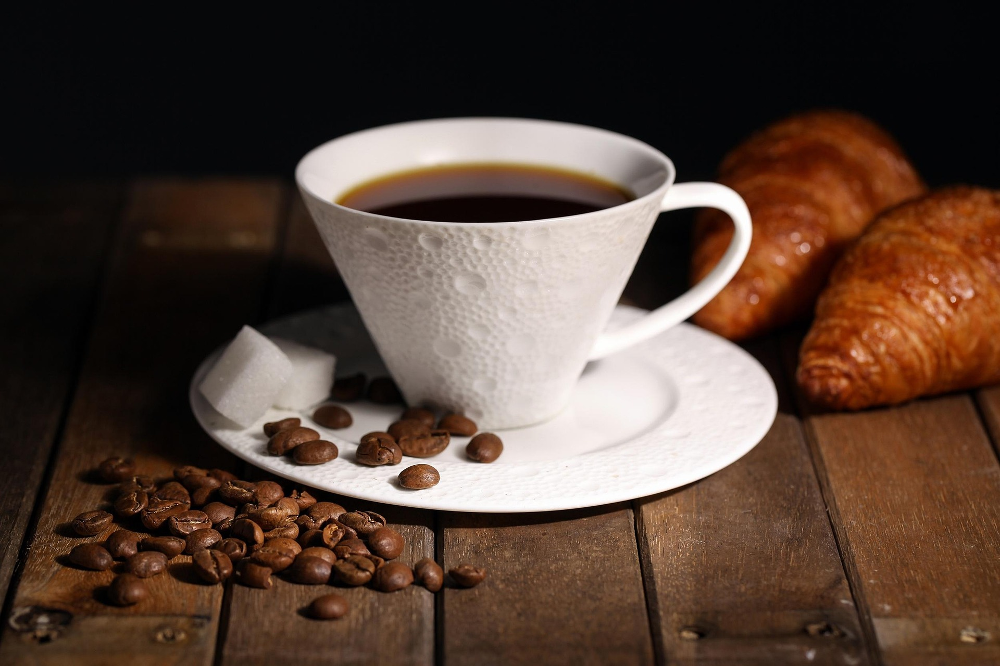

Mistä kaikki alkoi
KuppiNurin sai alkunsa kahden ystävän unelmasta: halusta avata kahvila, jossa laatu, lämpö ja aidot kohtaamiset olisivat kaiken keskiössä. Ensimmäinen vuosi kului reseptejä hioen, paahteita maistellen ja asiakkaita kuunnellen.
Pian huomasimme, että moni tuli meille muutakin kuin kahvia varten. Joku teki töitä, toinen vietti hiljaisen aamuhetken, kolmas juhlisti päivää pullakahvien kanssa. Niistä hetkistä rakentui KuppiNurinin henki.
